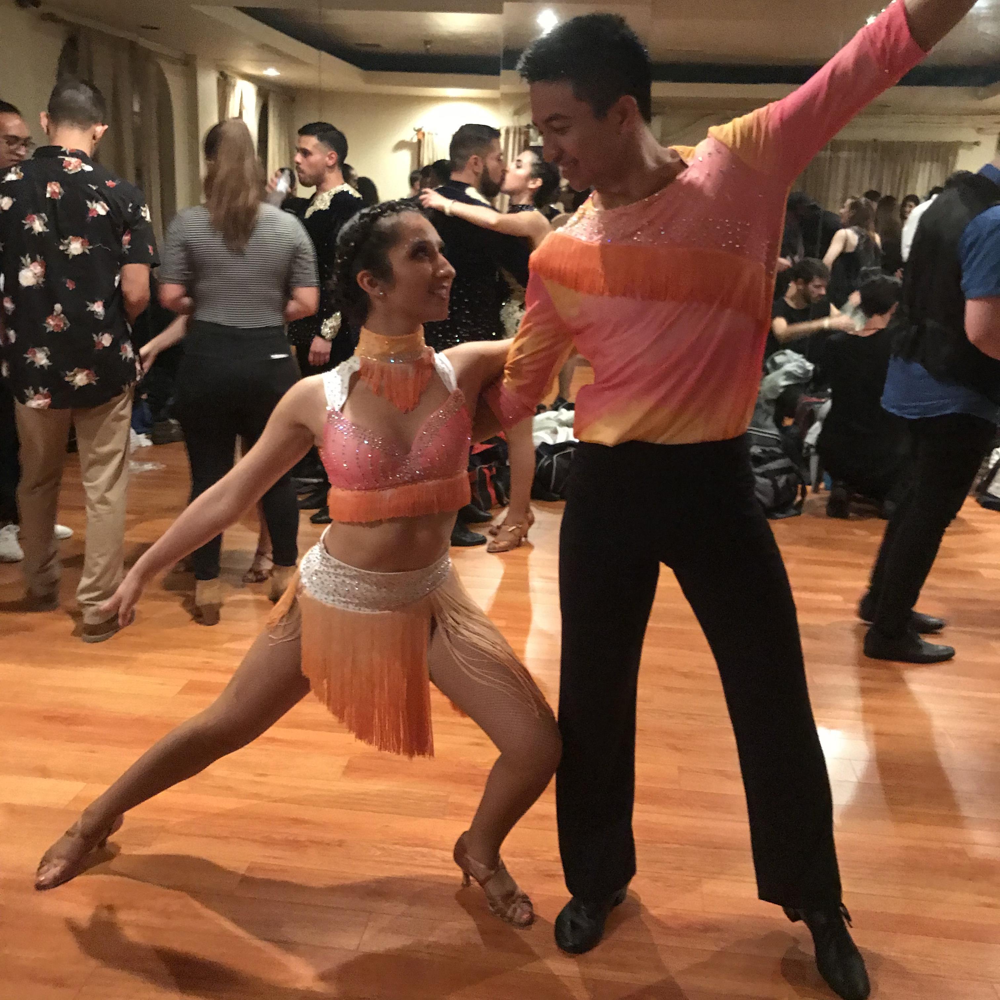
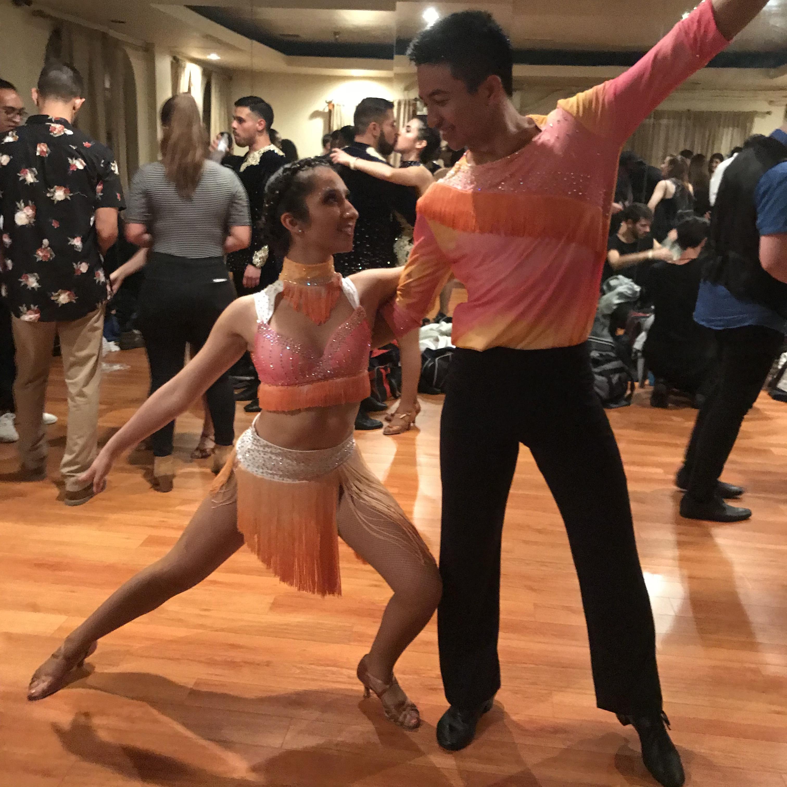

About Me


 


Maribel is a junior at Stanford University majoring in Computer Science with a minor in Education. She was raised in Albuquerque, New Mexico, where she discovered her passion for engineering. She sought out every opportunity that would allow her to explore different STEM fields. She completed four different internships at the University of New Mexico with concentrations in Chemical Engineering, Electrical Engineering, and Computer Science. She continues to impress by teaching people how to code, interning at a national lab, and successfully completing her class courses.
She is also very passionate about community service. She has completed hundreds of hours in community service including mentoring students, tutoring, helping her under-resourced high school provide more opportunities to students, and staying actively engaged in the Latinx community on Stanford's campus.
On her free time, she spends a lot of time teaching and dancing Salsa and Bachata as part of Salseros de Stanford, attending musical productions, and riding horses.
Her yearning to learn and help others is astounding. She will have such a bright future.